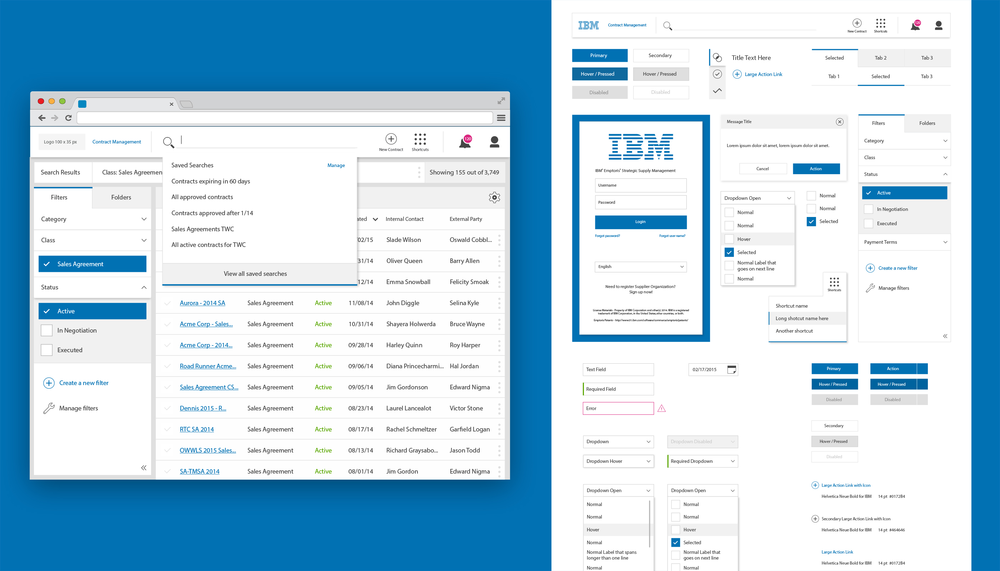
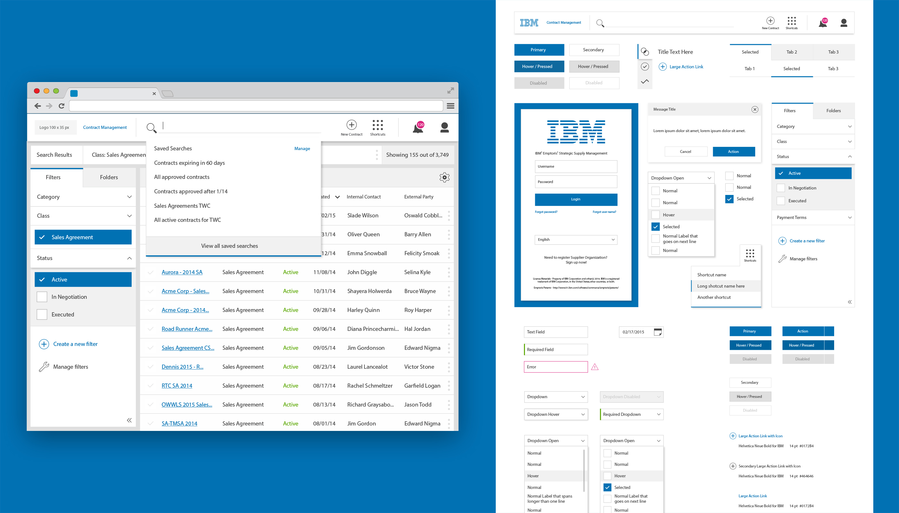

Trent Lutmer

Background
In June of 2014, I spent 18 months as a UX designer on Emptoris Contract Management (ECM). My role on the team was to rethink the experience and visual design for the search, dashboard, and contract editor. The team’s goal was to fit Emptoris with a new user experience while maintaining the current list features that our customers currently love.
ECM is a product that manages the lifecycle of contracts among users through continuous communication. Users are able to create and track contracts through its different stages and easily send notifications to alert users.
Defining the Problem
We examined how we can make managing contracts more collaborative.
Contract Management Industry
To understand pain points, we reached out to users across all 17 industries that dealt with managing contracts.
- Lack of overall visibility across the lifecycle of contracts
- No collaboration among users
- Lack of support and integration between other products in the suite
Goals
What if..?
- Finding a contract were simpler, smarter, and faster?
- Contracts were surfaced directly on the homepage?
Solutions
What if finding a contract were simpler, smarter, and faster?
- What if they could easily find contracts from previous sessions?
- What if they could have smarter and automated results?
Contracts were surfaced directly on the homepage?
- What if they could easily find contracts from previous sessions?
- What if they could have smarter and automated results?
 
